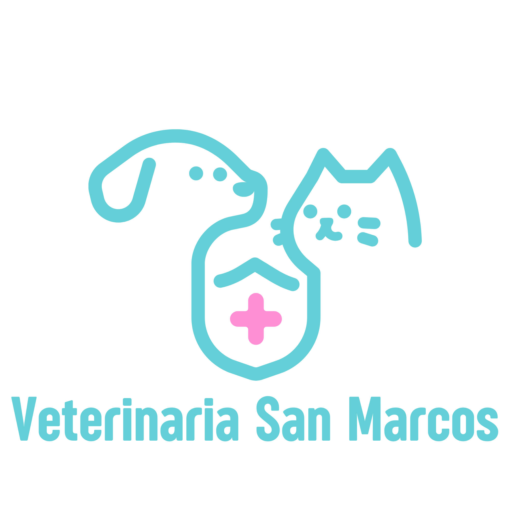
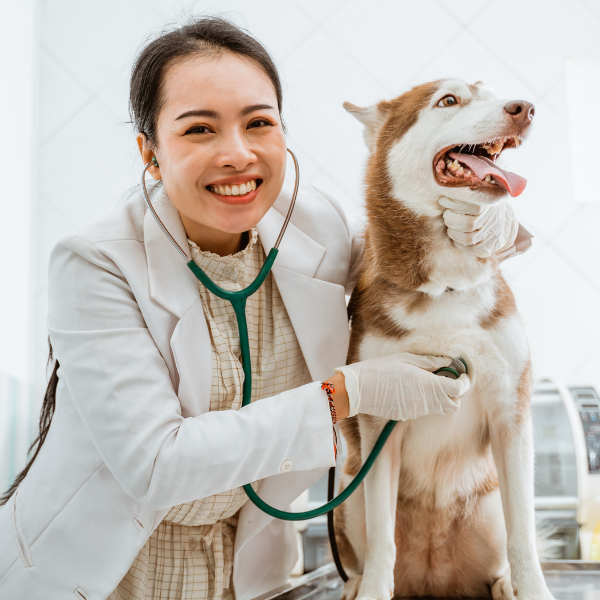

Tu mascota sana y más feliz con un veterinario en casa
Desde el año 2009, en Veterinaria San Marcos nos dedicamos al cuidado integral de perros, gatos, aves y conejos. Nuestro equipo médico está preparado para brindar desde consultas generales hasta cirugías menores, garantizando siempre el bienestar de tu mejor amigo.

Atención cálida, cómoda, profesional y moderna
Nuestro equipo médico está comprometido en brindar a tu mascota un trato empático y libre de estrés.
Contamos con instalaciones de primer nivel para asegurar su bienestar en cada visita.

-
Camila Rojas ★★★★★
"Llevo a mi perrito Max desde que era un cachorro. Los doctores son muy empáticos, siempre explican el diagnóstico con claridad y el control de vacunas es excelente."
-
Roberto Méndez ★★★☆☆
"Buena atención médica para mi gato, resolvieron su problema rápidamente. Sin embargo, tuvimos que esperar un poco en recepción para que nos llamaran."
-
Sofía Arancibia ★★★★☆
"Esterilizaron a mi conejita la semana pasada y la recuperación ha sido maravillosa. Se nota la dedicación y el profesionalismo de todo el equipo de la clínica."
¡Agenda tu hora online!
Olvídate de las esperas al teléfono. Ahora puedes solicitar la cita médica para tu mascota, revisar su historial clínico y estar al tanto de sus vacunas directamente desde nuestra plataforma web.
Agendar cita¿Tienes dudas/consultas sobre alguno de nuestros servicios?
Rellena el formulario de contacto aquí.
La importancia de los cuidados de tu mascota
Adoptar es un compromiso de por vida. En Veterinaria San Marcos te acompañamos en cada etapa para garantizar que tu mejor amigo reciba el cuidado, el cariño y la atención médica que merece, porque ellos confían en ti.